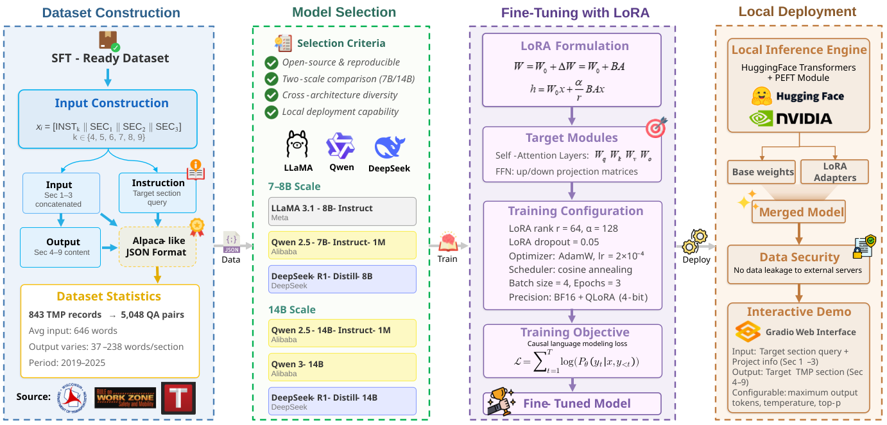

@article{sheng2026large,
title={Large Language Model-Assisted Preparation of Transportation Management Plans: A Case Study with WisDOT WisTMP System},
author={Sheng, Zihao and Huang, Zilin and Qu, Yansong and Chen, Jiancong and Luo, Yuhao and Chen, Yen-Jung and Leng, Yue and Chen, Sikai},
journal={arXiv preprint arXiv:},
year={2026}
}